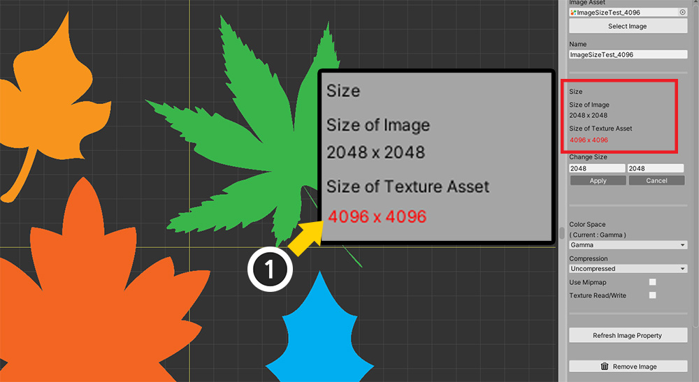

AnyPortrait > マニュアル > 画像のサイズを変更
画像のサイズを変更
1.3.4
ほとんどの場合、AnyPortraitで使用される「イメージ（Image）」属性は、Unityでのテクスチャアセットの設定に従います。
したがって、一般的に「イメージの実際のサイズ」、「テクスチャアセットとしてインポートされたサイズ」、「AnyPortraitで設定されたサイズ」はすべて同じです。
しかし、場合によっては、画像の大きさの値が異なることがあります。
テクスチャアセットの画像のサイズを減らしてインポートすることもでき、AnyPortraitで実際とは異なる画像のサイズを設定することもできます。
このページは、このような特殊な状況に有用な情報を提供しています。
案内
このページで紹介する機能は、実際には、イメージファイルのサイズを変更することがありません。
「実際のサイズ」と「UnityまたはAnyPortraitで認識されたサイズ」を区別する必要があり、このページには、「実際のサイズ」につきましてはいません。
画像のサイズの属性を変更
AnyPortraitエディタで画像を選択すると、上記のような情報が表示されます。
(1) AnyPortraitでの画像の大きさです。
(2) Unityのテクスチャアセットとしてのイメージのサイズです。
(3) 画像のサイズを変更するUIです。

もしテクスチャアセットとしてサイズとAnyPortraitでの大きさが異なっている場合、どのよう表示されるでしょうか？
準備した例の実際のイメージのサイズは、「4096x4096」であり、Unityのインポート設定によってで「2048x2048」に変更された状態でした。
そして、その画像をAnyPortraitで開いたので、現在は「2048x2048」に等しく見えたのです。
上記のようにテクスチャのインポート設定を変更して、画像のサイズを大きく、または小さくてみましょう。
（この例のほかの多くの場合でもテクスチャのサイズが変わることがあります。）

再びAnyPortraitエディタに戻り、画像を選択してみましょう。
(1) テクスチャアセットのサイズが「4096x4096」に変わっているのを見ることができます。
AnyPortraitの画像サイズと異なっているので、赤文字で変わりました。
通常は、画像の大きさの属性が異なる状態で製作をしても大きな問題はありません。
むしろ画像のサイズを変更すると、すでに作業メッシュに影響を与えることができて注意してください。
しかし、作業の初期のとき、一貫性のあるサイズの属性を持って作業をしたい場合は、以下の順に画像のサイズを変更してみましょう。

(1) 「Change Size」項目のサイズを入力欄に変更したい画像サイズの縦、横をそれぞれ入力します。
(2) 「Applyボタン」を押します。
(3) 警告メッセージが表示されます。「Okayボタン」を押します。
この時、警告メッセージがもう一つ表示されます。
これは、画像のサイズを変更する場合、メッシュグループ内のメッシュに影響を与えるので、これをどのように処理するかを尋ねるメッセージです。
二つのオプションが提供され、後述される説明に沿ってボタンを押すと、なりません。
「Calibrate Scale」または「Ignore」ボタンを押すと、画像のサイズが変更されます。
メッシュグループ内のメッシュの大きさの補正するかどうか
画像のサイズを変更すると、メッシュは、画像のサイズ変更率に合わせてサイズが変更されます。
したがってキャラクターのメッシュが破損していません。
しかし、メッシュグループに配置されたメッシュの場合は少し異なります。

説明のために上記のような状況を設定してみました。
(1) メッシュグループを一つ作成しました。
(2) ここでは4つのメッシュを追加しました。
再び戻ってきて、画像のサイズを変更してみましょう。
(1) 今回は画像の幅、高さの比率を人為的に変えてみようと幅だけ半分に減らします。
(2) 「Applyボタン」を押して (3) 警告メッセージの「Okayボタン」を押します。
上記の確認した警告メッセージが表示されます。
既存のメッシュグループ内のメッシュに影響を与える可能性があることを示しています。
Cancelを除いて、二つの選択肢があることを見ることができます。
- Calibrate Scale：メッシュグループ内のメッシュのデフォルトサイズに画像のサイズ変更率を逆に適用する補正過程を経て、既存のフォームを可能維持するようにします。
- Ignore：別の補正過程を経ずに、画像のサイズを変更します。
(1) 一度「Calibrate Scale」ボタンを押して、結果を確認してみましょう。
メッシュグループを確認する前に、メッシュを確認してみましょう。
画像の幅が半分に減っただけメッシュも縦に長くなった形状をしていることを見ることができます。
ところが、メッシュグループを選択して確認してみると、メッシュの大きさが変わらないように見えます。
(1) 「Edit Default Transform」を有効にした状態でメッシュを選択します。
(2) Xサイズが2倍に増加したことがわかります。
「Calibrate Scale」オプションを使用すると、メッシュの大きさを補正して外観が可能な維持されるよう作成します。
ただし、これは基本的な補正であり、モディファイヤが適用された状態であれば、従来とは異なる結果を示すことがあることに注意してください。

画像のサイズを変更する前に戻って、今度は、「Ignore」ボタンを押してみましょう。

メッシュグループを選択すると、画像が縮小された割合だけメッシュも一緒に縮小されたことを見ることができます。